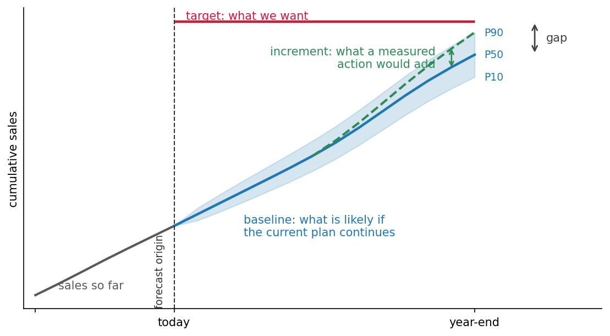
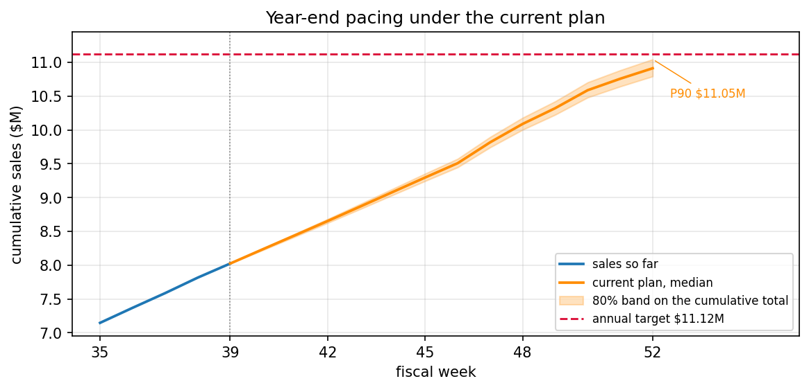
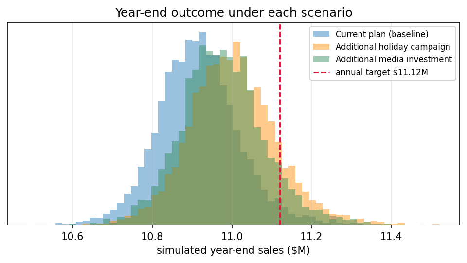

5.3 销售预测与情景规划
关于中文版
本页是英文版 Marketing Science in Python 的AI翻译。英文版为正式版本，如有出入，以英文版为准。代码、Notebook 和图片中的文字保持英文。 阅读英文版
现在是 9 月下旬。销售额年初至今增长了 7.3%，但年度目标要求 8.0%。还剩十三周，其中包括从黑色星期五到圣诞节这一段，这家企业全年销售中不成比例的一大块就在这段时间完成。规划团队需要决定，当前的计划够不够，还是需要额外的行动。
| 目标与销售状况 | 数值 |
|---|---|
| 至今销售额（39 周） | $8.02M |
| 年初至今同比 | +7.3% |
| 剩余周数 | 13 |
| 去年结果 | $10.30M |
| 年度目标 | $11.12M |
| 目标同比 | +8.0% |
要做这个决定，我们需要两样东西：在当前计划下销售额可能落在哪里，以及一次额外的营销行动能把这个结果推动多少。第一个是预测问题。第二个是因果问题，它的答案来自本书的测量章节，而不是来自预测。
三个术语贯穿本章。目标是业务选定的固定阈值。基线是对剩余几周的预测，前提是当前计划继续执行，塑造了历史的那些经常性促销、价格和媒体投放仍然到位。增量是一次额外的营销行动在基线之上增加的部分。对于情景 \(s\)，年末结果为
\[ Y^{(s)}_{\text{year-end}} = Y_{\text{so far}} + R_{\text{baseline}} + \Delta_s \]
即至今销售额，加上剩余几周的基线预测，加上该情景引起的增量。

这个序列由作者生成：在真实的 2014 到 2019 年日历上，六个 52 周财年的每周电商收入。节假日高峰的强度逐年不同，而活动效应有一个已知的真实大小。
配套 Notebook： sec5.3_sales_forecasting.ipynb 复现了本章的每一个数字和图表（两张概念图来自 regenerate_sec5_3_figures.py）。
在 GitHub 上查看
构建并验证基线
销售额同比增长 7.3%，人们很容易把这个增长率套在去年的总额上，然后称之为预测。这条捷径只有在趋势延续、并且最后一个季度与去年相似时才成立。节假日季度正是这两个假设都站不住的地方：高峰很大，而且它的大小逐年不同。季度也不是在高峰上结束的。一旦过了发货截止日，圣诞周会大幅回落，而这一周有些年份落在财年第 51 周，有些年份落在第 52 周。

所以我们需要一个针对剩余几周的模型。两个基准设定了下限，四个候选在同一段历史上与它们竞争。
- 朴素法。 重复最后一个观测周。它对即将开始的季节视而不见。
- 季节性朴素法。 重复去年的同一个财年周。这是把“套用去年的模式”说明白了。
- ETS（指数平滑）。 把水平、趋势和季节性作为显式成分，有两个版本，带和不带 52 周的季节项。
- Prophet。 一条会变化的趋势、一个年度季节和日历效应，作为独立的加法成分拟合。
- LightGBM，基于滞后特征，以财年周以及节假日和促销日历作为输入。一个固定的、轻度正则化的对照模型，而不是调参过的生产模型。
- TimesFM 2.5。 一个预训练的基础模型，以零样本方式使用：不做拟合，除了销售历史什么都不给。

from statsmodels.tsa.exponential_smoothing.ets import ETSModel
def fit_ets(train, seasonal=None):
model = ETSModel(
pd.Series(np.log(train)),
error="add", trend="add", damped_trend=True,
seasonal=seasonal, seasonal_periods=52 if seasonal else None,
)
return model.fit(disp=False)七条路径在高峰上分歧很大，而图上没有任何东西告诉你该相信哪一条。在回测中打败基准的候选才成为基线。流行或新近都不能让一个模型合格。
用滚动起点回测验证
通常的做法是随机的训练/测试集划分。在这份数据上，那会给 LightGBM 一个 4.5% 的 WAPE。这个数字有两个原因是误导性的。打乱顺序让模型可以在它要预测的那些周之后的周上训练，而有了滞后特征，大多数测试行在训练集里都有相邻的周。而且随机划分打分的是逐行的插值：它甚至产生不了决策所需要的那个对象，即从一个固定起点出发的 13 周路径。
规则是，每个模型只使用预测起点时可获得的信息，而用于评估的每一个历史预测都遵循同样的规则。滚动起点回测强制执行了这条规则，而财年日历让它在这里干净利落。每一年都有同样的 52 周形状，所以我们现在面对的决策，也就是从 9 月下旬预测年末，可以在 FY2016、FY2017 和 FY2018 的同一个时点重演。FY2015 之前的历史太短，不足以估计 52 周的季节。这就给出了这个问题的三个复本。

HORIZON = 13
SEPT_ORIGINS = [143, 195, 247] # end of fiscal week 39, FY2016..FY2018
for origin in SEPT_ORIGINS:
train = y[:origin] # nothing after the origin, for any model
actual = y[origin:origin + HORIZON]
for name, forecast in fit_all_models(train, HORIZON).items():
score(name, origin, actual, forecast)两个点指标就足以比较这些模型。每周 WAPE，即 \(\sum_t |y_t - \hat y_t| / \sum_t |y_t|\)，是规划人员熟悉的那种误差。年末问题取决于 13 周总额的带符号误差，因为每周的偏差会在一个季度的总和里部分抵消。看表之前有一条注意事项。Prophet 和 LightGBM 得到了节假日和促销日历，而 TimesFM 只得到了销售历史。这个序列也是在 52 周周期上合成的，正是季节性 ETS 天生就适合拟合的形状。
| 模型 | 每周 WAPE | 13 周总额误差 | 偏差 |
|---|---|---|---|
| 朴素法 | 13.2% | 6.8% | -6.8% |
| 季节性朴素法 | 8.6% | 5.5% | -5.5% |
| ETS，水平 + 趋势 | 13.3% | 4.7% | -4.7% |
| ETS，水平 + 趋势 + 季节 | 7.4% | 2.6% | -1.3% |
| LightGBM，滞后 + 日历 | 12.3% | 5.7% | -5.7% |
| Prophet，日历回归量 | 10.5% | 5.3% | +1.8% |
| TimesFM 2.5，零样本 | 10.8% | 2.6% | -1.5% |
季节性主导了这个季度。季节性 ETS 在两列中误差都最低，成为基线。它也是这里唯一一个拟合后的模型能带着不确定性模拟许多条 13 周路径的候选，而下一步正需要这一点。TimesFM 只用原始序列就在 13 周总额上与它打平。Prophet 在 13 周总额上几乎没有比季节性朴素法好多少，因为它的年度季节是一个 365.25 天的周期，而这家企业是按固定的 52 周年份做规划的。在一条合成序列上，这两个结果都不能给方法排名。LightGBM 那一行承载着验证的教训：滚动起点的 12.3% 对比随机划分的 4.5%，就是泄漏的大小。
达成目标的概率
现在来看回测刚刚验证过的那套流程的实时版本。在 9 月下旬之前的全部数据上拟合季节性 ETS，模拟 5,000 条完整的 13 周路径，并把每条路径的总额加到至今 $8.02M 的销售额上。
result = fit_ets(y[:LIVE_ORIGIN], seasonal="add")
paths = simulate_paths(result, h=13, repetitions=5000) # centered residual bootstrap
year_end = sales_so_far + paths.sum(axis=0) # one total per path
p10, p50, p90 = np.percentile(year_end, [10, 50, 90])
p_hit = (year_end >= target).mean()每周的预测误差在整个预测期内是相关的，而分位数不能相加，这就是为什么代码模拟完整路径并对每一条求和，而不是把每周的分位数叠起来。

年末预测的中位数是 $10.91M，80% 区间从 $10.79M 到 $11.05M。中位数是通常出现在演示文稿里的那个数，但它不是一个承诺。$11.12M 的目标刚好在 P90 上方，所以在当前计划下达成它的概率是 4%。这不是不可能，但显然不太可能，而团队现在有了一个数字来说明有多不可能。
这个 4% 来自一个模拟出的分布，所以这个分布本身需要一次检查，就检查我们据以决策的那个量：13 周总额。检查的方法是在过去的起点重演同一套流程，问已实现的总额是否落在 80% 区间带内。在 15 个不重叠的 13 周窗口中，它有 12 次落在带内，接近名义上的 80%，而三个 9 月复本覆盖了 3 个中的 2 个。这支持的是区间带的宽度，而不是它的尾部：目标位于 P90 之外，在那里 15 个窗口不足以认证一个像 4% 这么小的数字。把答案读作个位数的低百分比，并按“显然不太可能”而不是 4.0% 来做规划。
营销情景需要经过测量的增量
基线分布说的是当前计划可能落在哪里。每次规划会议上的下一个问题是，一次额外的活动会不会改变答案。
去年节假日促销周的销售比周围几周高出约 22%，所以人们很容易给一次额外活动填上 +22%。这个差距不是活动效应。促销安排在最强的几周，所以这 22% 中有一部分是季节性。基线已经带有经常性促销的平均效应，所以其余部分大多已经在预测里了。剩下的是促销和模型漏掉的其他一切的混合。预测说的是可能发生什么，而不是因为营销发生了什么。所以 \(\Delta_s\) 来自预测之外，而且在进入模拟之前它需要两样东西：一个参照条件，即它是相对于什么的增量，以及一个不确定性分布。
这些增量是形状像真实测量值的占位符。从相关章节填上每一行，或者把它去掉；像经校准的 MMM 这样的贝叶斯来源可以直接提供后验抽样。
增量进入模拟时，单位很重要。活动效应是相对的：它乘以每条路径自己的活动周销售额，所以一个强劲的节假日季会带来按比例更大的美元提升。媒体效应以美元到达，直接相加。
beta = rng.normal(0.08, 0.025, size=n_paths) # campaign lift per path
campaign_base = paths[CAMPAIGN_STEPS, :].sum(axis=0)
year_end_campaign = sales_so_far + paths.sum(axis=0) + beta * campaign_base
media = rng.normal(60_000, 25_000, size=n_paths) # dollars over the quarter
year_end_media = sales_so_far + paths.sum(axis=0) + media| 情景 | P10 | P50 | P90 | P(达成目标) | 解读 |
|---|---|---|---|---|---|
| 当前计划（基线） | $10.79M | $10.91M | $11.05M | 4% | 不太可能 |
| 额外的节假日活动 | $10.87M | $11.00M | $11.14M | 13% | 胜算更大，仍不太可能 |
| 额外的媒体投资 | $10.85M | $10.97M | $11.11M | 8% | 有帮助，单靠它不够 |

活动把中位数从 $10.91M 推到 $11.00M。这张表同时呈现了改善后的胜算和仍然存在的差距，这是点预测做不到的。
从预测到决策
同一个模拟也回答了反向的问题：这个季度需要比基线中位数高出多少，而以前有没有发生过类似的事？
| 比较 | 相对基线季度的增幅 |
|---|---|
| 达成目标所需 | +7.2% |
| 9 月最大的向上偏离 | +6.0% |
| 活动增量（中位数） | +3.0% |
| 媒体增量（中位数） | +2.1% |
达成目标需要一个比基线中位数高 7.2% 的季度。三个 9 月复本没有一个接近这个水平；最大的向上偏离是 6.0%，而即使两个增量加在一起也只增加约 5%。活动把胜算从 4% 提高到 13%，但目标仍然不太可能达成。
团队现在有一个选择：加大投入、改变经营计划，或者修正预期。无论选哪个，这个差距都是一个可以在 9 月就据以规划的数字。它建立在一条在决策所用预测期上验证过的基线之上，也建立在预测之外测量得到的增量之上。
要点
- 在决策所用的预测期和日历时点上验证基线，只使用每个起点时可获得的信息。随机划分回答的是另一个问题。
- 根据分布而不是点来决策。在整个预测期上模拟完整路径，把一个中位数预测变成 4% 的达标概率，它应读作个位数的低百分比，而不是一个精确的频率。
- 情景等于基线加上一个单独测量的增量，两者各有一个参照条件和一个不确定性。促销周的销售额不是增量。